Team Vicito
Durch Geschwindigkeit zum Sieg!

Über uns
Wir sind das F1 in Schools Team Vicito von der Alexander-von-Humboldt-Schule Neumünster und haben uns im März 2020 zusammengefunden, um an den Regionalmeisterschaften im Februar 2021 in Elmshorn teilzunehmen. Der Wettbewerb bietet für uns eine ganz neue Herausforderung, da wir die vielseitigen Aufgaben als Team selbstständig bewältigen und über einen langen Zeitraum intensiv und zielgerichtet zusammenarbeiten werden.
Unsere Fahrzeuge
Prototyp 1
05.04. – 24.04.2020

Unser Konstrukteur Patrick konstruierte den 1. Prototypen des Teams in Zusammenarbeit mit unserem Entwicklungsingenieur Jarno im April 2019 mit dem CAD-Programm „Solid Edge“. Die wichtigsten Faktoren waren hierbei, das Fahrzeug möglichst aerodynamisch zu gestalten, allerdings ohne die Stabilität zu vernachlässigen. Das Fahrzeug zeichnet sich besonders durch seine hohe Länge und den Frontflügel aus, welcher aus zwei in die Länge gestreckten Flügelsegmenten pro Seite besteht, um die Luft mit möglichst geringem Widerstand über die Vorderreifen zu leiten.
Prototyp 2
02.06. – 19.06.2020

Die Konstruktion des zweiten Prototypen erfolgte im Juni 2020 und stellt eine Revolution zum ersten Prototypen dar. Dies drückt sich dadurch aus, dass der Aufbau des Fahrzeugs, also das Fahrzeugkonzept, ein grundsätzlich anderes ist: Die Begründung dafür liegt in einigen Schwächen des ersten Prototypen, z.B. dem Gewicht, welches bei diesem zu hoch ist. Außerdem konnten wir durch das neue Fahrzeugkonzept die Aerodynamik in vielen Bereichen des Fahrzeugs deutlich verbessern. Der Prototyp zeichnet sich u.a. durch einen zusätzlichen Frontflügel auf der Oberseite des Autos aus, der den Regularien entspricht. Somit hatten wir mehr Möglichkeiten in der Gestaltung des eigentlichen Frontflügels.
Prototyp 2.1
22.08. – 17.09.2020

Zu Testzwecken im Windkanal und in Vorbereitung auf die Konstruktion des finalen Fahrzeugs haben wir einige Teile des zweiten Prototypen verändert. So wollen wir ermitteln, ob wir Teile des Fahrzeugs in Bezug auf das finale Auto verbessern können. Dies betrifft beispielsweise die Seitenkästen, die wir von Grund auf für Vergleichstests neu konstruiert haben. Zudem experimentieren wir mit der Nutzung von Teflonhülsen, die in die Führungsösen eingesetzt werden. Hierdurch soll die Reibung mit der Führungsschnur, die das Fahrzeug auf der Strecke hält, verringert werden, um die Geschwindigkeit zu steigern.
Finales Fahrzeug
11.10. - 25.10.2020
Bei der Konstruktion des finalen Fahrzeugs haben wir alle Erfahrungen unserer Prototypen miteinfließen lassen, um das Auto möglichst aerodynamisch, aber trotzdem stabil zu gestalten. Hierbei ging es vor allem um Kleinigkeiten, die schlussendlich alle zusammen einen entscheidenden Unterschied im Hinblick auf das Abschneiden beim Wettbewerb machen. Das Fahrzeug mag seinem Vorgänger, dem Prototypen 2.1, zwar relativ ähnlich sehen, jedoch haben wir fast jeden Bereich des Fahrzeugs noch einmal detailliert überarbeitet, um das Auto zu optimieren. Ein besonderes Augenmerk legten wir dabei auf die Front, die wir deutlich verändert haben, um den Luftwiderstand sowohl in diesem Bereich als auch um das gesamte Auto herum zu veringern!